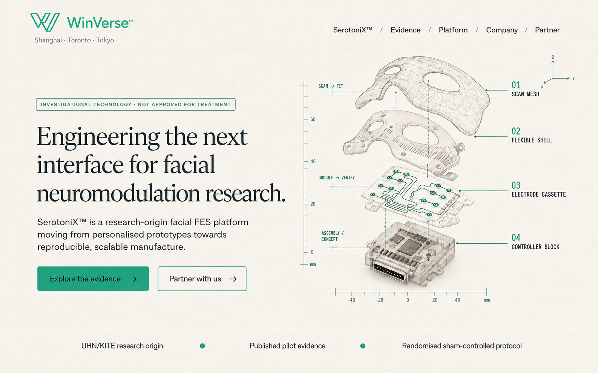

Published foundation
Facial FES feasibility
Early work explored whether electrically evoked facial expression could influence emotional experience. It established scientific plausibility, not clinical proof.
Read the indexed studyInvestigational technology · Not approved for treatment
SerotoniX™ is a research-origin facial functional electrical stimulation platform moving from personalised prototypes towards reproducible, scalable productisation.
01 · SerotoniX™
Facial FES may offer a new way to study the relationship between expression and emotion. The present evidence is preliminary. WinVerse is therefore focused on the harder enabling problem: making research delivery more consistent, measurable and manufacturable.
SerotoniX™ is investigational. It is not approved to diagnose, treat, cure or prevent any disease, and no efficacy claim is made on this website.
02 · Evidence
The programme begins with published work and an active research pathway—but the next milestone is stronger controlled evidence, not louder marketing.
Published foundation
Early work explored whether electrically evoked facial expression could influence emotional experience. It established scientific plausibility, not clinical proof.
Read the indexed studyCurrent evidence pathway
A published 2025 protocol describes a single-site, double-blind pilot trial with 20 participants receiving 20 take-home sessions. Results remain to be established.
Read the published protocolResearch institution
UHN describes the Smile project and its research history. In 2026, Toronto General—part of UHN—was ranked No. 2 globally by Newsweek/Statista. This does not constitute an endorsement of WinVerse.
03 · Productisation
The current personalised fabrication pathway is useful for trials but unlikely to scale economically in its present form. SerotoniX™ is being framed around repeatability, modularity and evidence capture.
Capture participant-specific geometry with a controlled fit workflow.
Separate the fit layer, electrode architecture and reusable electronics.
Record session configuration, delivered dose, comfort and response quality.
Build the dataset required for clinical, engineering and regulatory decisions.

05 · Company
WinVerse™ is an early-stage Shanghai-based neurotechnology venture. Its immediate goal is not broad consumer launch: it is a tightly governed research and productisation programme for SerotoniX™, supported through the NovaKonexus™ commercialisation pathway and guided by rehabilitation-technology leader Zen Koh.
About Zen Koh06 · Partner
We welcome conversations with clinical investigators, psychiatrists, human-factors specialists, medical-device engineers, manufacturers, regulatory experts and research funders.
Discuss a partnership